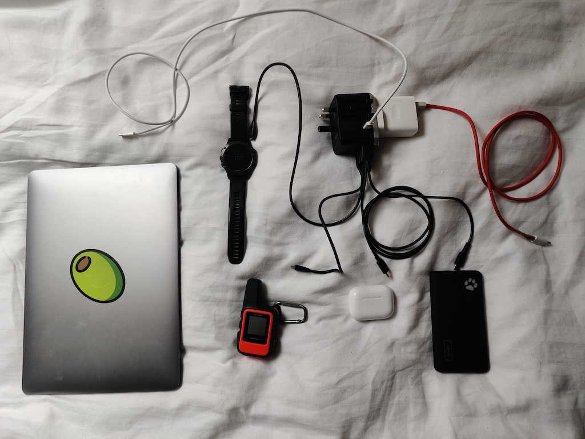

18th May 2024
In past holidays I have often just taken a single European plug adapter, converting straight to UK and powering 1 or maybe 2 at most devices. However, with the upcoming trip likely having lots of moments where I don't have access to power for more than a 30-minute stop in a café, an efficient and fast way to charge all my bits n' bobs is required.
Based on about 10 minutes of research I have purchased a Wizco universal plug adapter. It's full name (like most Amazon products attempting to get to the top of the search result) is a lot longer and full of buzz words so I've shortened it.
Above are the things I wish to carry with me as I go, plus my phone which I used to take the photo. In here I have my laptop, headphones, a battery pack, a tracker for walking without phone signal and my garmin watch for tracking activities. I let them all get to a low-ish charge and tracked the charging speed when using all 6 of the ports from the Wizco charger.
| device | initial % | 10 mins | 20 mins | 30 mins | 40 mins | 50 mins |
|---|---|---|---|---|---|---|
| Watch | 64% | 74% | 83% | 91% | 96% | 99% |
| Tracker | 12% | 18% | 24% | 31% | 37% | 44% |
| Phone | 63% | 75% | 82% | 87% | 90% | 93% |
| Earphones | red | red | red | red | red | green |
| Battery pack | 2 / 4 | 2 / 4 | 2 / 4 | 2 / 4 | 3 / 4 | 3 / 4 |
| Laptop | 74% | 74% | 77% | 80% | 82% | 85% |
I'd consider adding 20-30% to all my devices in a 30 minute pit-spot enough to manage on. Note I was using the laptop during the entirety of this experiment and also had the phone charged using the "Warp Charger". I'd assumed giving it the main plug socket port with it's own wall wart would give it it's standard 60w charge output and it looks like I was right. Also note that the battery pack can only say out of 4 how charged it is, but increasing it 1/4 is the same as adding ~50% to my phone indirectly. Also, as the earphones don't have a battery charge amount I don't have any other metric other than it changing from red to green on the front facing LED. Even though I have no idea what the charge was at the start, it's nice to know it was charging as it did manage to reach full charge.It seems this charger will in fact hold up well enough.
Finally after 5 trips to various outdoor and camping shops I've finally purchased the pair of feet wrappers I'm going to wear on this trip around the world. I went with the Meindl Baltimore GTXs.
You can find a link to the charger here and the boots here.
Navigate home